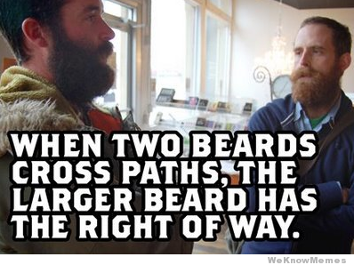
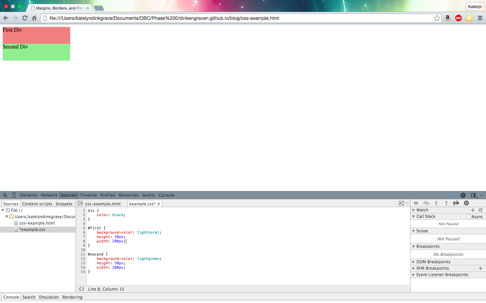
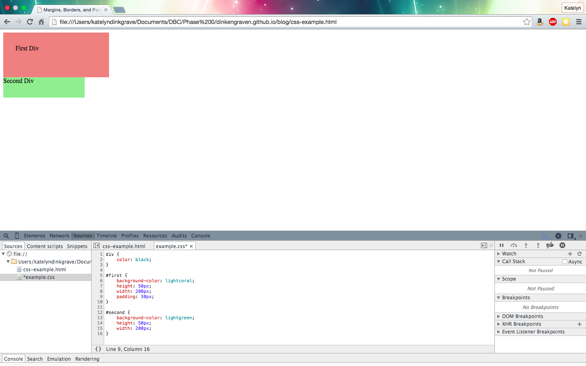
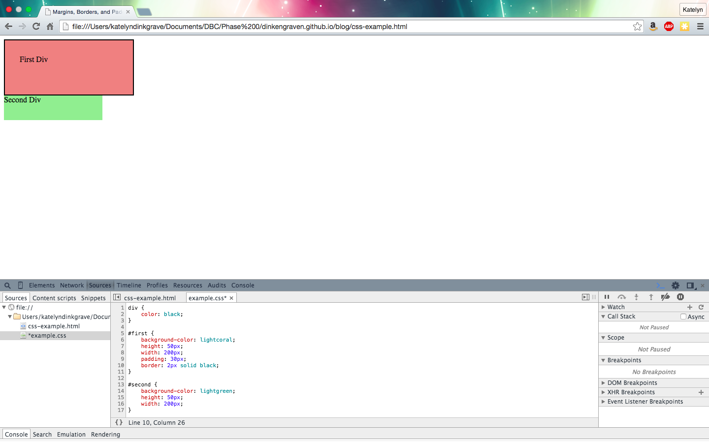
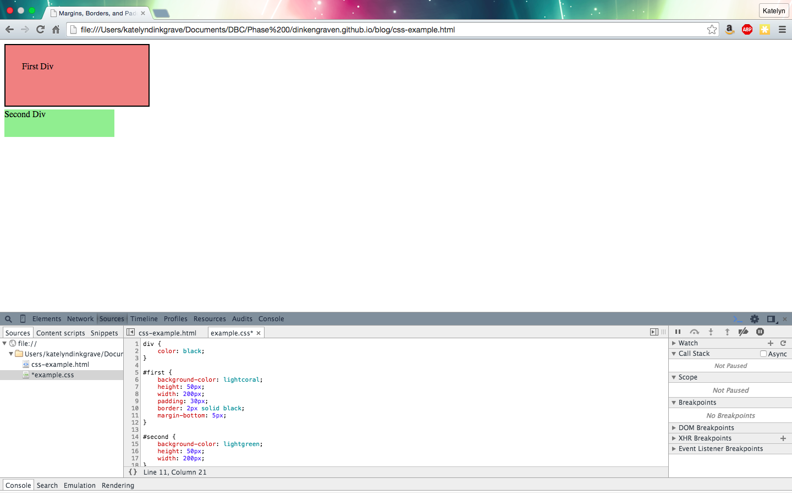
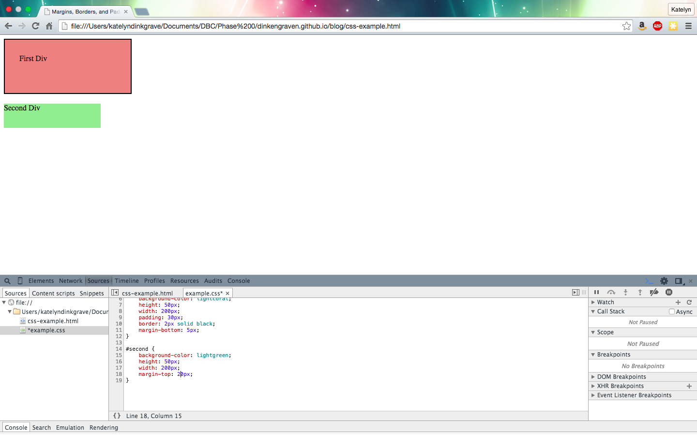

Technical Blog - Phase 0 Week 2
The CSS Box Model as a Painting: How to Mat, Frame, and Hang Your Content
August 10, 2015
When learning CSS for the first time, there is an overwhelming amount of information to take in -- elements, parents and children, inheritance, cascading, specificity, and so on. Add to this that CSS is a visual language, so you have to hold two concepts in your mind -- the verbal commands you give the computer, and what they should look like on the screen.
CSS was very challenging for me, but one thing that I did understand was the Box Model. The Box Model shows the interaction between content, padding, border, and margins. It helped me to think of this as a piece of art that you might take to the store to get framed. First, let's look at our box model, and then we'll compare it to a painting.

Here you can see the distinctions between each attribute.
Content: The content is whatever you want to have inside your block, typically text or an image. This is your painting.
Padding: This is the space between your content and your border. Think of this as the mat board that surrounds your painting.
Border: As you've probably already figured out, the border in CSS is just like the frame for your painting. You can change the color, thickness, and even the style of the border (or have no visible border at all).
Margin: Here is where we need to stretch our imaginations a bit. The margin is an invisible line drawn around the framed painting. Anything between the outside edge of the margin and the outside edge of your border (frame) is transparent.
There are two important things to note here. The first is that when two margins touch, the smaller margin collapses into the larger margin. So if you have two paintings with mats and frames, the first with a margin of 20px and the second with margin of 50px, only the 50px margin remains. In other words...

The second is that all of these properties increase the size of your element. So if you have a 50px by 50px image with a padding of 5px all around, then the div is now 60px wide and 60px tall. Add a border of 1px, and now you have a div that is 62px by 62px.
Let's see an example in code.

Here we start with 2 divs.

Add padding to the coral div. (Notice how the overall size changes.)

Then add a border.

Note how adding the 5px margin-bottom attribute creates a white space between our first and second divs.

But when we add a larger 20px margin-top to our second div, it takes precedence over the 5px margin-bottom of the first div.
Those are the basics on padding, borders, and margins. If you're struggling to keep theses three terms straight, just think of your content as a matted and framed painting. I found that the best way to understand these concepts was to play around in the Chrome Dev Tools so that I could directly manipulate each object and see the results immediately. I also found this video helpful.